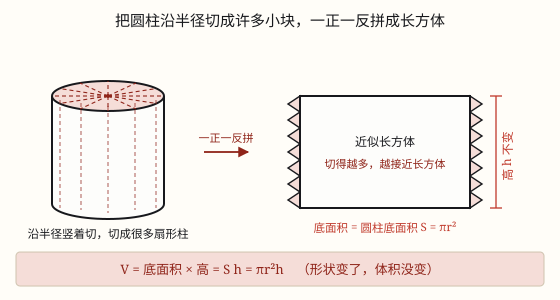

圆柱的体积
把圆柱切成许多小块拼成近似长方体，底面积不变、高不变，所以 V = Sh = π r^2 h。
| 所属主题 | 立体图形 |
|---|---|
| 所属模块 | 图形与几何 |
| 课标学段 | 第三学段（5~6年级） |
| 前置知识 | 体积和体积单位 |
| 核心素养 | 空间观念推理意识运算能力 |
课标要求
| 图形与几何·图形的认识与测量 | 认识长方体、正方体和圆柱，了解这些图形的展开图，探索并掌握这些图形的体积和表面积的计算公式，认识圆锥并探索其体积的计算公式，能用这些公式解决简单的实际问题。 印刷第 33 页 行为动词：掌握 |
|---|---|
| 图形与几何·图形的认识与测量 | 在图形认识与测量的过程中，进一步形成量感、空间观念和几何直观。 印刷第 33 页 行为动词：感悟 |
说明
圆柱的体积，其实我们早就有一半答案了。六年级上册学圆面积时用过一招——化圆为方：把圆平均分成很多小扇形，一正一反拼起来，拼成一个近似长方形，长是 π r、宽是 r，面积 π r^2。圆柱只是在圆的基础上「往上长高」了，用同一招就能解决。
具体做法：把圆柱的底面平均分成很多小扇形，沿着这些半径把整个圆柱竖着切成很多块细长的「扇形柱」，然后一正一反地拼起来。切得越多，拼出来的形状越接近一个长方体。
剪和拼都只是「搬家」，体积一点没变。再看这个长方体：它的底面积就是圆柱原来的底面积 S = π r^2，它的高就是圆柱的高 h。长方体体积 = 底面积 × 高，所以圆柱的体积 V = Sh = π r^2 h。
这条公式和长方体、正方体是同一个公式：凡是从上到下一样粗的柱体，体积都等于底面积乘高。所以 V = Sh 不用单独背，它只是「一层一层往上叠」这个想法的通用写法。
计算时按顺序来：先算底面积 π r^2，再乘高。别把 2π r（底面周长）当成底面积，那是给圆柱「做围裙」用的，不是装东西用的。
使用场景
饮食与配比：圆柱形水杯、奶茶杯能装多少毫升，先算体积再换算成毫升。
购物消费：易拉罐上标着「330 毫升」，装不装得下，算一算容积就知道标签有没有夸大。
工程建造：圆柱形水泥柱、桥墩要用多少混凝土；圆形管道里能流多少水，都算圆柱体积。
农业生产：圆柱形粮囤、蓄水池能装多少粮食或水，按体积估算。
计量与估算：一根圆木、一段钢材有多重，先算体积再乘每立方米的重量。
注意点
先算底面积，再乘高。π r^2 里的 r^2 是 r × r，不是 r × 2。
直径要折成半径。底面直径 8 厘米，r = 4 厘米，别把 8 直接平方。
别把侧面积公式混进来。2π rh 算的是「包一层」的面积，π r^2 h 才是「装多少」。
体积单位和容积单位要会换：1\text dm^3 = 1\text L，1\text cm^3 = 1\text mL，1\text m^3 = 1000\text dm^3。
管子用内直径。算「能装多少水」量里面，算「用多少料」量外面，别搞混。
为什么是这样

图 1：切得越细，拼出来越像长方体；底面积和高都没变，所以体积是「底面积 × 高」
算理推导
先回忆圆面积那一招：把圆平均分成很多小扇形（像切披萨），一正一反拼起来，就拼成一个近似长方形，长是半个周长 π r、宽是半径 r，面积是 π r × r = π r^2。分的份数越多，拼出来的边越平直。
圆柱只是这个圆「往上长高」了。所以同样把底面分成很多小扇形，沿着这些半径竖着切下去，整个圆柱就被切成很多块细长的「扇形柱」。
把这些小块一正一反拼起来：底面拼成了那个近似长方形，整个立体就变成一个近似长方体。切得越多，侧面的锯齿越小，越接近真正的长方体；但不管切多少块，用的还是原来那些料。
找对应关系：长方体的底面积，就是原来圆柱的底面积 S = π r^2；长方体的高，就是圆柱的高 h。剪开重拼只是搬家，体积没有增减。
长方体体积 = 底面积 × 高 = Sh，所以圆柱体积也是 Sh。把底面积换成 π r^2，就得到 V = π r^2 h。这和长方体、正方体是同一条公式，凡是上下一样粗的柱体都适用。
动手实验
用一块橡皮泥（或一团湿黏土）捏成一个圆柱，量出底面直径 d 和高 h，算出体积 π r^2 h。再把这块橡皮泥重新捏成一个长方体，量出长、宽、高，算一算 abh。两个结果应该几乎一样——泥还是那块泥，只是换了形状。更准的办法：把圆柱形杯子装满水，倒进长方体的透明盒里，量出水升高的高度，算出水的体积，再和 π r^2 h 对一对。你会发现：形状变了，装的东西一点没变。
按场景的例题
例 1（场景：饮食与配比） 圆柱形水杯能装多少水
一个圆柱形水杯，底面直径 8 厘米，高 12 厘米。它最多能装多少毫升水？（杯壁厚度忽略不计）
解：r = 8 ÷ 2 = 4 厘米；底面积 3.14 × 4^2 = 50.24 平方厘米；体积 50.24 × 12 = 602.88 立方厘米，也就是 602.88 毫升。
答：约 603 毫升（602.88 毫升）。
例 2（场景：工程建造） 圆柱形水泥柱浇多少混凝土
一根圆柱形水泥柱，底面直径 0.8 米，高 3 米。浇一根这样的柱子需要多少立方米混凝土？
解：r = 0.4 米；底面积 3.14 × 0.4^2 = 0.5024 平方米；体积 0.5024 × 3 = 1.5072 立方米。
答：需要 1.5072 立方米。
例 3（场景：农业生产） 圆柱形粮囤的容量
一个圆柱形粮囤，底面周长 6.28 米，高 2 米。它能装多少立方米粮食？
解：先由周长求半径：r = 6.28 ÷ 3.14 ÷ 2 = 1 米；底面积 3.14 × 1^2 = 3.14 平方米；体积 3.14 × 2 = 6.28 立方米。
答：能装 6.28 立方米。
例 4（场景：购物消费） 易拉罐的净含量可信吗
一个圆柱形易拉罐，底面直径 6 厘米，高 12 厘米，标签上写着「净含量 330 毫升」。这个标注合理吗？
解：容积 3.14 × 3^2 × 12 = 3.14 × 9 × 12 = 339.12 立方厘米，约 339 毫升。装 330 毫升后罐里还留了一点空隙。
答：合理：罐子能装约 339 毫升，标 330 毫升留了余量。
常用推论
圆柱的体积 V = Sh = π r^2 h；反过来，h = V ÷ S，S = V ÷ h。
底面积不变时，高扩大到原来的 n 倍，体积也扩大到 n 倍；高不变时，底面半径扩大到 n 倍，体积扩大到 n^2 倍。
长方体、正方体、圆柱的体积统一为 V = Sh（底面积乘高）。
容积单位换算：1\text dm^3 = 1\text L，1\text cm^3 = 1\text mL，1\text m^3 = 1000\text dm^3。
易错点
错底面直径 8 厘米、高 12 厘米，算成 3.14 × 8^2 × 12 = 2411.52 立方厘米。
为什么错8 是直径，r^2 里的 r 应该是 4。把直径当半径，体积大了 4 倍。
正确3.14 × 4^2 × 12 = 602.88 立方厘米。
错算成 2 × 3.14 × 4 × 12 = 301.44。
为什么错这是侧面积 2π rh，算的是「包一层纸」，不是「装多少」。
正确体积要乘底面积：3.14 × 4^2 × 12 = 602.88 立方厘米。
错底面周长 6.28 米，直接把 6.28 当半径算 3.14 × 6.28^2 × 2。
为什么错6.28 是周长，不是半径。要先 6.28 ÷ 3.14 ÷ 2 = 1 米求出半径。
正确r = 1 米，V = 3.14 × 1^2 × 2 = 6.28 立方米。
错容积算出 602.88，答案写成「602.88 平方厘米」。
为什么错体积和容积是三维的量，单位要立方；平方厘米是面积的单位。
正确602.88 立方厘米，也就是 602.88 毫升。
直观理解
把圆柱想成一摞圆形纸片：一张纸的面积是 π r^2，摞到高 h，就是 h 张叠起来，体积自然是「一张的面积 × 张数」。切拼成长方体，不过是把这摞纸每层错开半张、让边缘变直，张数和每张的大小都没变，所以体积也没变。
圆柱体积底乘高，半径平方莫混淆；切成小块拼长方，形状变了体积同。